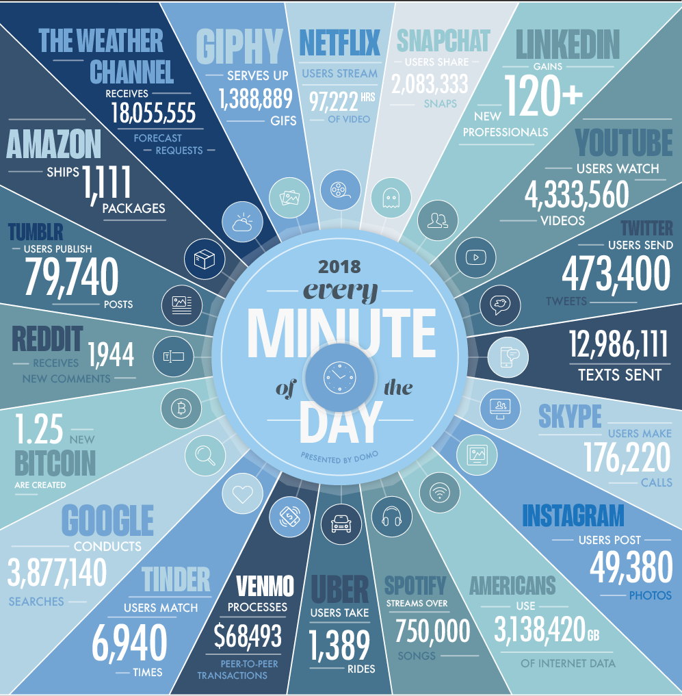
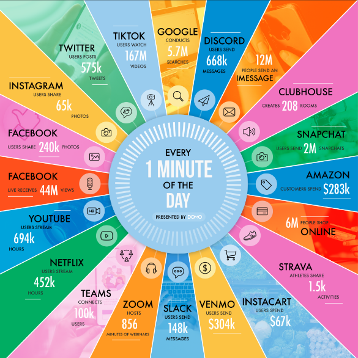
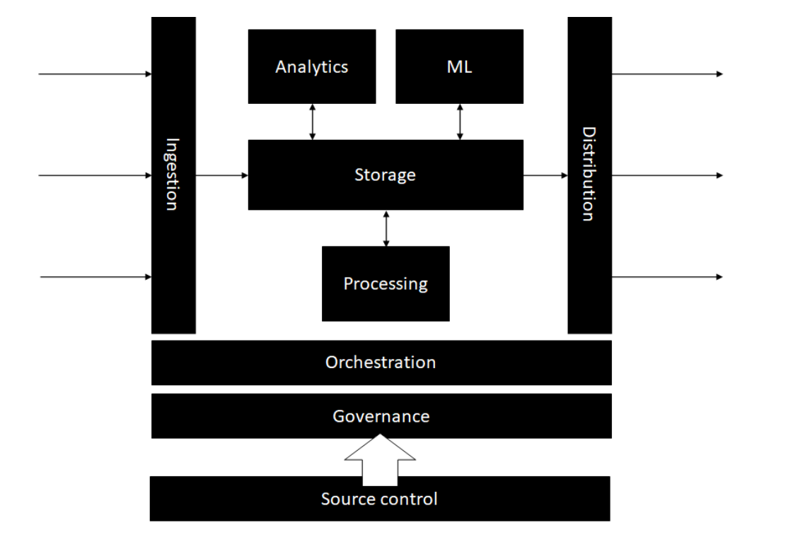
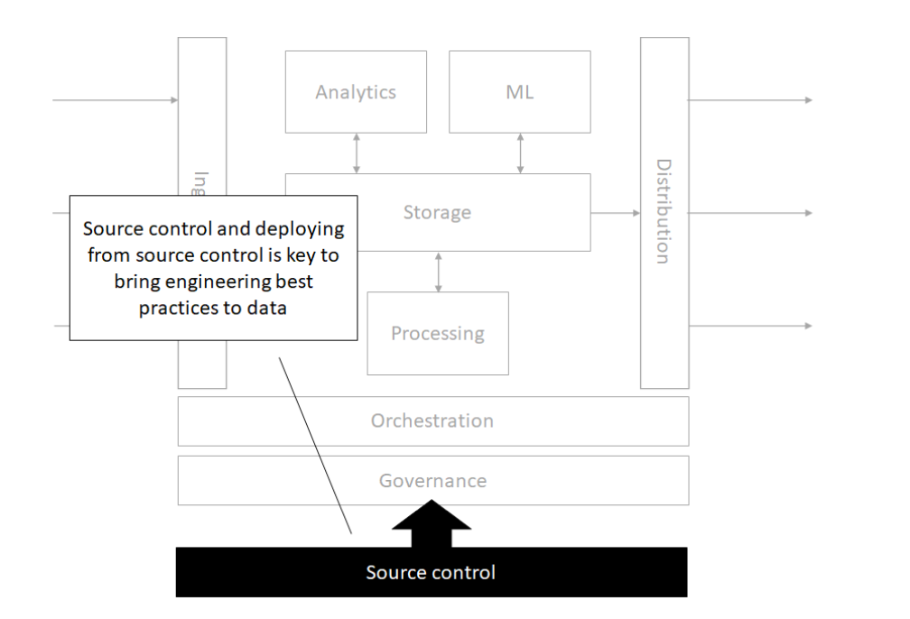

Lecture 1
Course overview. Introduction to big data concepts. The Cloud.
Georgetown University
Fall 2025
Agenda for today’s session
Course and syllabus overview
Big Data Concepts
- Definition
- Challenges
- Approaches
Data Engineering
Introduction to
bash- Lab: Linux command line
Bookmark these links!
- Course website: https://aa1603.georgetown.edu/dsan6000
- GitHub Organization for your deliverables: https://github.com/gu-dsan/
- Slack Workspace: https://dsan6000fall2025.slack.com
- Instructors email: dsan-Fall-2025@georgetown.edu
- Canvas: https://georgetown.instructure.com/courses/TBA-2025
These are also pinned on the Slack main channel
Instructional Team - Professors
Marck Vaisman
- AI & ML Cloud Architect and Data Scientist at Microsoft
- Teaching at GWU since 2015 (9 year) and Georgetown since 2016
- Co-Founder of DataCommunityDC
- R Fanatic
Fun Facts
- I love music and try to play music at the beginning of class, typically EDM. Other genres I love:
- Latin
- Bluegrass
- Chill
- I speak fluent Spanish, I grew up in Venezuela
- Love beer & bourbon
- Goofball
- Westie owner
- I can speak like Donald Duck

Abhijit Dasgupta
- Data Science Associate Director at AstraZeneca supporting Oncology R&D
- bioinformatics, biomarkers, clinical studies
- autoencoders, survival analysis, signal processing
- Adjunct Professor at Georgetown since 2020
- R and reproducible research evangelist
- Python is cool too!!
- Co-founder of Statistical Programming DC (with Marck Vaisman)
Fun Facts
- I’m a 4th degree black belt in Aikido,
- over 30 years experience providing flyer miles
- Exploring global whiskey, currently on Japan
- Active in community theater, mainly behind but sometimes on-stage.

Amit Arora
- Principal Solutions Architect - AI/ML at AWS
- Adjunct Professor at Georgetown University
- Multiple patents in telecommunications and applications of ML in telecommunications
Fun Facts
- I am a self-published author https://blueberriesinmysalad.com/
- My book “Blueberries in my salad: my forever journey towards fitness & strength” is written as code in R and Markdown
- I love to read books about health and human performance, productivity, philosophy and Mathematics for ML. My reading list is online!

Course Description
Data is everywhere! Many times, it’s just too big to work with traditional tools. This is a hands-on, practical workshop style course about using cloud computing resources to do analysis and manipulation of datasets that are too large to fit on a single machine and/or analyzed with traditional tools. The course will focus on Spark, MapReduce, the Hadoop Ecosystem and other tools.
You will understand how to acquire and/or ingest the data, and then massage, clean, transform, analyze, and model it within the context of big data analytics. You will be able to think more programmatically and logically about your big data needs, tools and issues.
Always refer to the syllabus and calendar in the course website for class policies.
Learning Objectives
- Setup, operate and manage big data tools and cloud infrastructure, including Spark, MapReduce, DataBricks, Hadoop on Microsoft Azure and Amazon Web Services
- Use ancillary tools that support big data processing, including git and the Linux command line
- Execute a big data analytics exercise from start to finish: ingest, wrangle, clean, analyze, store, and present
- Develop strategies to break down large problems and datasets into manageable pieces
- Identify broad spectrum resources and documentation to remain current with big data tools and developments
- Communicate and interpret the big data analytics results through written and verbal methods
Evaluation
- Group project : 40%
- Assignments : 30%
- Lab completions : 20%
- Quizzes : 10%
Course Materials
- Slides/labs/assignment on Website/GitHub
- Quizzes and readings in Canvas
Communication
- Slack is the primary form of communication
- Instructional team email:
dsan-Fall-2025@georgetown.edu
Slack rules:
- Post any question/comment about the course, assignments or any technical issue.
- DMs are to be used sparingly
- You may not DM multiple people in the instructional team at the same time for the same issue
- Keep an eye on the questions posted in Slack. Use the search function. It’s very possible that we have already answered a questions
- You may DM us back only if we DM you first on a given issue
- Lab/assignment/project questions will only be answered up to 6 hours before something is due (i.e. 6pm on Mondays)
Project
- Groups of 3-4 students
- Use an archive of Reddit data, augmented with external data
- Exploratory analysis
- NLP
- Machine Learning
- Writeup
- Data sourcing and ingesting
- Exploratory analysis
- Modeling
- Challenges and Learnings
- Conclusions
- Future work
BIG DATA
Where does it come from?
How is it being created?
In one minute of time (2018)
In one minute of time (2019)

In one minute of time (2020)

In one minute of time (2021)
A lot of it is hapenning online.
We can record every: * click * ad impression * billing event * video interaction * server request * transaction * network message * fault * …
It can also be user-generated content, e.g.:
- Instagram posts
- Tweets
- Videos
- Yelp reviews
- Facebook posts
- Stack Overflow posts
- …

But health and scientific computing create a lot too!

???
There’s lots of graph data too
Many interesting datasets have a graph structure:
- Social networks
- Google’s knowledge graph
- Telecom networks
- Computer networks
- Road networks
- Collaboration/relationships
Some of these are HUGE
Apache (web server) log files
System log files

Internet of Things (IoT)
Sensors everywhere…

Smartphones collecting our information

Where else?
The Internet
Transactions
Databases
Excel
PDF Files
Anything digital (music, movies, apps)
Some old floppy disk lying around the house
Typical real world scenario
You have a laptop with 16GB of RAM and a 256GB Solid State drive. You are given a 1TB dataset in text files, where every file is slightly different. Oh no, what do you do?
AD: This was the situation I experienced during my AstraZeneca interview. We had to do a data analysis for our interview, and the data given was the FDA drug adverse event reporting database.
What is Big Data?
Let’s discuss!

Exponential data growth
Big Data Definitions
Wikipedia
“In essence, is a term for a collection of datasets so large and complex that it becomes difficult to process using traditional tools and applications. Big Data technologies describe a new generation of technologies and architectures designed to economically extract value from very large volumes of a wide variety of data, by enabling high-velocity capture, discover and/or analysis”
O’Reilly
“Big data is when the size of the data itself becomes part of the problem”
EMC/IDC
“Big data technologies describe a new generation of technologies and architectures, designed to economically extract value from very large volumes of a wide variety of data, by enabling high-velocity capture, discovery, and/or analysis.”
Frameworks for thinking about Big Data
IBM: (The famous 3-V’s definition)
Volume (Gigabytes -> Exabytes)
Velocity (Batch -> Streaming Data)
Variety (Structured, Semi-structured, & Unstructured)
Additional V’s
- Variability
- Veracity
- Visualization
- Value
Think of data size as a function of processing and storage
Can you analyze/process your data on a single machine?
Can you store (or is it stored) on a single machine?
If any of of the answers is no then you have a big-ish data problem!
Relative data sizes
Relative data sizes
Relative data sizes
Relative data sizes
Relative data sizes

Relative data sizes

Data Types
- Structured
- Unstructured
- Natural language
- Machine-generated
- Graph-based
- Audio, video, and images
- Streaming
Big Data vs. Small Data
| Small Data is usually… | On the other hand, Big Data… | |
|---|---|---|
| Goals | gathered for a specific goal | may have a goal in mind when it’s first started, but things can evolve or take unexpected directions |
| Location | in one place, and often in a single computer file | can be in multiple files in multiple servers on computers in different geographic locations |
| Structure/Contents | highly structured like an Excel spreadsheet, and it’s got rows and columns of data | can be unstructured, it can have many formats in files involved across disciplines, and may link to other resources |
| Preparation | prepared by the end user for their own purposes | is often prepared by one group of people, analyzed by a second group of people, and then used by a third group of people, and they may have different purposes, and they may have different disciplines |
| Longevity | kept for a specific amount of time after the project is over because there’s a clear ending point. In the academic world it’s maybe five or seven years and then you can throw it away | contains data that must be stored in perpetuity. Many big data projects extend into the past and future |
| Measurements | measured with a single protocol using set units and it’s usually done at the same time | is collected and measured using many sources, protocols, units, etc |
| Reproducibility | be reproduced in their entirety if something goes wrong in the process | replication is seldom feasible |
| Stakes | if things go wrong the costs are limited, it’s not an enormous problem | can have high costs of failure in terms of money, time and labor |
| Access | identified by a location specified in a row/column | unless it is exceptionally well designed, the organization can be inscrutable |
| Analysis | analyzed together, all at once | is ordinarily analyzed in incremental steps |
Challenges of working with very large datasets
| V | Challenge |
|---|---|
| Volume | data scale |
| Value | data usefulness in decision making |
| Velocity | data processing: batch or stream |
| Viscosity | data complexity |
| Variability | data flow inconsistency |
| Volatility | data durability |
| Viability | data activeness |
| Validity | data properly understandable |
| Variety | data heterogeneity |
Thinking about big data workflows
William Cohen (Director, Research Engineering, Google) said the following:
Working with big data is not about:
- Code optimization
- Learning the details of today’s hardware/software (they are evolving…)
Working with big data is about understanding:
- The cost of what you want to do
- What the tools that are available offer
- How much can be accomplished with linear or nearly-linear operations
- How to organize your computations so that they effectively use whatever’s fast
- How to test/debug/verify with large data
Traditional data analysis tools like R and Python are single threaded
Tools at-a-glance
Languages, libraries, and projects
We’ll talk briefly about Apache Hadoop today but we will not cover it in this course.
Cloud Services
- Amazon Web Services (AWS)
- Azure
Other:
Additional links of interest
Matt Turck’s Machine Learning, Artificial Intelligence & Data Landscape (MAD)
Data Engineering
Difference between Data Scientist and Data Engineer
In this course, you’ll be doing a little data engineering!

Responsibilities

Data Engineering falls into levels 2 and 3 primarily

As an analyst/data scientist, you really need both
The modern data architecture
Architecture
Storage

Source control
Orchestration

Processing

Analytics

Machine Learning

Governance

Time for Lab!
Linux Command Line
Linux Command Line
Terminal
- Terminal access was THE ONLY way to do programming
- No GUIs! No Spyder, Jupyter, RStudio, etc.
- Coding is still more powerful than graphical interfaces for complex jobs
- Coding makes work repeatable
Linux Command Line
BASH
- Created in 1989 by Brian Fox
- Brian Fox also built the first online interactive banking software
- BASH is a command processor
- Connection between you and the machine language and hardware
Linux Command Line
The Prompt
username@hostname:current_directory $
What do we learn from the prompt?
- Who you are - username
- The machine where your code is running - hostname
- The directory where your code is running - current_directory
- The shell type - $ - this symbol means BASH
Linux Command Line
Syntax
COMMAND -F --FLAG * COMMAND is the program * Everything after that are arguments * F is a single letter flag * FLAG is a single word or words connected by dashes flag. A space breaks things into a new argument. + Sometimes single letter and long form flags (e.g. F and FLAG) can refer to the same argument
COMMAND -F --FILE file1
Here we pass an text argument “file1” into the FILE flag
The -h flag is usually to get help. You can also run the man command and pass the name of the program as the argument to get the help page.
Let’s try basic commands:
dateto get the current datewhoamito get your user nameecho "Hello World"to print to the console
Linux Command Line
Examining Files
Find out your Present Working Directory pwd
Examine the contents of files and folders using the ls command
Make new files from scratch using the touch command
Globbing - how to select files in a general way
\*for wild card any number of characters\?for wild card for a single character[]for one of many character options!for exclusion- special options
[:alpha:],[:alnum:],[:digit:],[:lower:],[:upper:]
Linux Command Line
Navigating Directories
Knowing where your terminal is executing code ensures you are working with the right inputs and making the right outputs.
Use the command pwd to determine the Present Working Directory.
Let’s say you need to change to a folder called “git-repo”. To change directories you can use a command like cd git-repo.
.refers to the current directory, such as./git-repo..can be used to move up one folder, usecd .., and can be combined to move up multiple levels../../my_folder/is the root of the Linux OS, where there are core folders, such as system, users, etc.~is the home directory. Move to folders referenced relative to this path by including it at the start of your path, for example~/projects.
To view the structure of directories from your present working directory, use the tree command
Linux Command Line
Interacting with Files
Now that we know how to navigate through directories, we need to learn the commands for interacting with files
mvto move files from one location to another- Can use file globbing here - ?, *, [], …
cpto copy files instead of moving- Can use file globbing here - ?, *, [], …
mkdirto make a directoryrmto remove filesrmdirto remove directoriesrm -rfto blast everything! WARNING!!! DO NOT USE UNLESS YOU KNOW WHAT YOU ARE DOING
Linux Command Line
Using BASH for Data Exploration
Commands:
head FILENAME/tail FILENAME- glimpsing the first / last few rows of datamore FILENAME/less FILENAME- viewing the data with basic up / (up & down) controlscat FILENAME- print entire file contents into terminalvim FILENAME- open (or edit!) the file in vim editorgrep FILENAME- search for lines within a file that match a regex expressionwc FILENAME- count the number of lines (-lflag) or number of words (-wflag)
Linux Command Line
Pipes and Arrows
|sends the stdout to another command (is the most powerful symbol in BASH!)>sends stdout to a file and overwrites anything that was there before>>appends the stdout to the end of a file (or starts a new file from scratch if one does not exist yet)<sends stdin into the command on the left
To-dos:
echo Hello World- Counting rows of data with certain attributes
Linux Command Line
Alias and User Files
.bashrc is where your shell settings are located
If we wanted a shortcut to find out the number of our running processes, we would write a commmand like whoami | xargs ps -u | wc -l.
We don’t want to write out this full command every time! Let’s make an alias.
alias alias_name="command_to_run"
alias nproc="whoami | xargs ps -u | wc -l"
Now we need to put this alias into the .bashrc
alias nproc="whoami | xargs ps -u | wc -l" >> ~/.bashrc
What happened??
echo alias nproc="whoami | xargs ps -u | wc -l" >> ~/.bashrc
Your commands get saved in ~/.bash_history
Linux Command Line
Process Managment
Use the command ps to see your running processes.
Use the command top or even better htop to see all the running processes on the machine.
Install the program htop using the command sudo yum install htop -y
Find the process ID (PID) so you can kill a broken process.
Use the command kill [PID NUM] to signal the process to terminate. If things get really bad, then use the command kill -9 [PID NUM]
To kill a command in the terminal window it is running in, try using Ctrl + C or Ctrl + /
Run the cat command on its own to let it stay open. Now open a new terminal to examine the processes and find the cat process.
Reference material: Text Lesson 1,2,3,7,9,10
Try playing a Linux game!
https://gitlab.com/slackermedia/bashcrawl is a game to help you practice your navigation and file access skills. Click on the binder link in this repo to launch a jupyter lab session and explore!